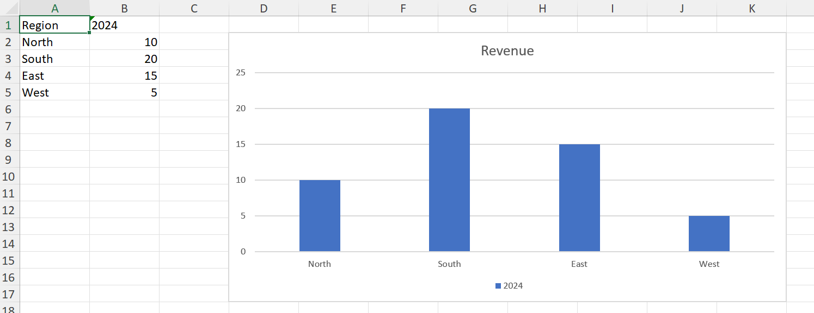
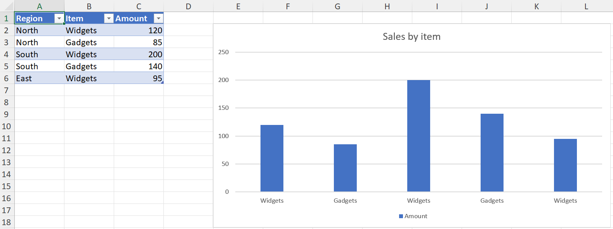

Handling of native Excel charts in XLSX.jl is experimental and a work in progress. All aspects may be subject to change. Feedback is welcome!
Creating charts
julia> using XLSX, XLSX.ChartsaddChart makes an empty chart of a given kind, and addSeries fills it. This page covers the c: schema; the newer kinds are in Creating chartEx charts.
A chart on a worksheet
julia> f = XLSX.newxlsx();
julia> ws = f[1];
julia> ws["A1"] = "Region"; ws["B1"] = "2024";
julia> ws["A2:A5"] = reshape(["North", "South", "East", "West"], 4, 1);
julia> ws["B2:B5"] = reshape([10.0, 20.0, 15.0, 5.0], 4, 1);
julia> c = addChart(ws, :column; anchor = "D2:K17", title = "Revenue");
julia> addSeries(c, "B2:B5"; categories = "A2:A5", name_ref = "B1");
julia> XLSX.writexlsx("revenue.xlsx", f)
"C:\\Users\\...\\revenue.xlsx"
anchor is required, and is the cell range the chart covers — its top-left and bottom-right corners on the sheet. title is nothing for the title Excel generates itself, a string for typed text, or false for no title at all.
A chart is created empty because a c: chart part is valid with no series, so addChart and addSeries can be separate steps. That is not true of the cx: schema, where the data block is required.
The kinds
kind is one of :column, :bar, :stackedColumn, :stackedBar, :line, :lineMarkers, :area, :pie, :doughnut, :scatter, :bubble or :radar. :bar and :stackedBar are horizontal; :column and :stackedColumn vertical.
Each comes from a chart part Excel itself wrote, kept verbatim in the package, so a created chart is what Excel would have produced for that kind — including its style and colour parts. Kinds with no template yet throw rather than approximate; see Limitations.
A chart on its own sheet
Pass the file rather than a worksheet to create a chartsheet:
julia> cs = addChart(f, :line; sheetname = "Trend", title = "Revenue over time");sheetname defaults to Chart1, Chart2, … as Excel names them. A chartsheet holds one chart, positioned absolutely rather than anchored to cells, so there is no anchor to give.
Its series still take their data from a worksheet, and must name the sheet, since there is no sheet of its own for an unqualified range to mean:
julia> addSeries(cs, "Sheet1!B2:B5"; categories = "Sheet1!A2:A5");Referring to data
A series' values, categories, name_ref and bubble_sizes all take the same forms:
- A range string —
"B2:B5", or"Sheet1!B2:B5"to name the sheet. An unqualified range means the chart's own sheet. - A defined name, which resolves through the workbook.
- A reference object:
XLSX.SheetCellRange,XLSX.CellRangeand the rest of the range types.
For a table, XLSX.gettablerange gives the ranges, header cell included:
julia> ts = XLSX.addsheet!(f, "Sales");
julia> ts["A1"] = "Region"; ts["B1"] = "Item"; ts["C1"] = "Amount";
julia> ts["A2:A6"] = reshape(["North", "North", "South", "South", "East"], 5, 1);
julia> ts["B2:B6"] = reshape(["Widgets", "Gadgets", "Widgets", "Gadgets", "Widgets"], 5, 1);
julia> ts["C2:C6"] = reshape([120.0, 85.0, 200.0, 140.0, 95.0], 5, 1);
julia> t = XLSX.addtable!(ts, "A1:C6"; name = "Sales", style="TableStyleMedium2");
julia> tc = addChart(ts, :column; anchor = "E2:L18", title = "Sales by item");
julia> addSeries(tc, XLSX.gettablerange(t, "Amount");
categories = XLSX.gettablerange(t, "Item"),
name_ref = XLSX.gettablerange(t, "Amount"; header = true));
julia> only(getChartSeries(tc)).name
"Amount"
Whatever you pass, the chart part stores a sheet-qualified absolute reference, as Excel does. The cells' current values are cached in the chart at the same time, so the series reads back without opening the file in Excel — see the chart cache.
Cells holding formulas written by XLSX.setFormula have no values until Excel recalculates them, so a series plotting them is cached empty. Excel recalculates when it opens the file and draws the chart from the results, so it looks the same there; only reading the series back before then finds no values. A Likert chart plots formulas this way, so that sorting the data in Excel reorders the chart.
name and name_ref differ: name is the series name as literal text, while name_ref points at a cell holding it, which is what Excel writes when you select a header row. Pass one or neither, not both.
Series options
addSeries takes the common formatting inline, so a series can be styled as it is added rather than in a second pass:
julia> addSeries(c, "C2:C5"; categories = "A2:A5", name = "2025", color = "FF0000");| Keyword | Applies to | Takes |
|---|---|---|
color | everything but pie and doughnut | a colour name, hex, a Colorant, a SchemeColor, or a scheme name such as "accent4" |
markers | line, lineMarkers, radar, scatter | a symbol such as :circle, or false for none |
smooth | line, lineMarkers, scatter | true or false — whether the line is curved |
line | scatter | true to join the points |
An option that doesn't apply to the chart's kind throws rather than being ignored, so a mistake is caught rather than silently dropped. Pie and doughnut charts colour their points individually rather than by series, which is why color has no meaning there.
Without color, series take the theme's accent colours in turn, as Excel does. Anything not covered here is set afterwards with the functions in Formatting charts.
A few combinations are rejected because the result would draw nothing or is under-specified: a bubble series needs both categories (its X values) and bubble_sizes, and a scatter series with markers = false needs line = true.
Adding to a chart Excel made
addSeries reads the chart's kind back from the part rather than from anything the package recorded, so it works on a chart Excel created exactly as on one addChart made:
julia> g = XLSX.opentemplate("chart_basic.xlsx");
julia> ec = getCharts(g)[1]
XLSX.Charts.Chart "chart1" on sheet "Data" at G9:N23
title: "Revenue by Region"
type: barChart
series: 2
[1] 2024 - Data!$B$2:$B$5 (4 pts)
[2] 2025 - Data!$C$2:$C$5 (4 pts)
julia> addSeries(ec, "Data!D2:D5"; categories = "Data!A2:A5", name = "2026");
julia> ec
XLSX.Charts.Chart "chart1" on sheet "Data" at G9:N23
title: "Revenue by Region"
type: barChart
series: 3
[1] 2024 - Data!$B$2:$B$5 (4 pts)
[2] 2025 - Data!$C$2:$C$5 (4 pts)
[3] 2026 - Data!$D$2:$D$5 (4 pts)The new series takes the next accent colour and the chart's own style, so it looks like the ones already there.
```julia
julia> [getSeriesFill(ec, i).value.fgcolor.val for i in 1:3] 3-element Vector{String}: "accent1" "accent2" "accent3" ```
A chart with more than one group — a combo chart — has no single group to add to, so addSeries throws on one.
Themes
A created chart's colours are theme references, not fixed values, so the chart follows the workbook's theme the way Excel's own charts do.
One consequence worth knowing: a workbook from XLSX.newxlsx() carries an older Office theme than current Excel, so charts created in a new workbook show that theme's colours rather than the ones Excel 365 would use. A chart added to a workbook Excel created uses that workbook's theme and matches.